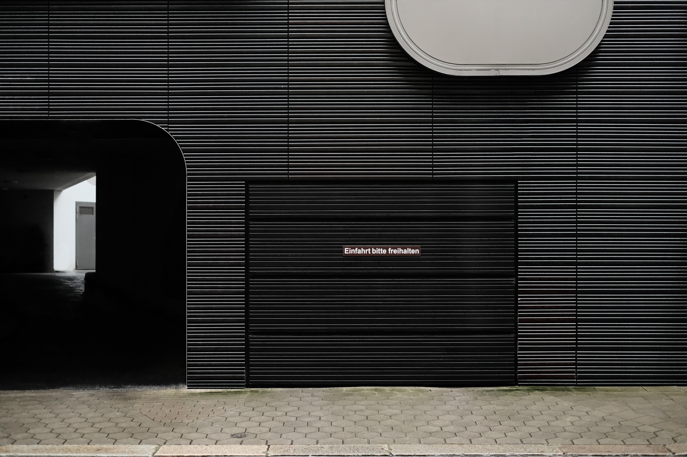

일단 html editor 을 찾는다. 나는 vsc를 사용
먼저 폴더를 만들고, .html을 넣은 파일명으로 파일을 만들면 html을 만들 수 있는 코드창이 실행된다.
실행창에 바로 입력하고 저장, 웹브라우저에서 해당 파일을 실행하면 바로 입력된 값 출력
strong으로 입력값을 감싸면 입력값이 진하게 표시할 수 있다. (앞선 문장과 이 문장에 strong을 감쌌다)
u로 입력값을 감싸면 이렇게 입력값에 밑줄을 칠 수 있다.('이렇게'에 u를 감쌌다)
strong이나 u와 같은 것을 tag라고 한다. 시작하는 tag을 열리는 태그, 끝내는 tag을 닫히는 태그라고 하고, 닫히는 태그에는 슬래시(/)를 넣어서 구분한다.
h1~h6이라는 태그로 제목처럼 만들 수 있다. h1~h6로 입력값을 감싸면, 입력값이 진하게 표시되고, h 뒤 숫자가 커질수록, 글자 크기는 작아진다. 또한 줄바꿈까지 된다.
예)
태그에는 150개 이상이 존재하고, 모든 태그를 알 수는 없다. 그래서 자주 사용되는 태그가 정리된 사이트가 있다.
새로운 줄을 추가할때는 br 태그를 사용한다. br태그는 닫히는 태그 없이 사용 가능하고, 한번에 여러개 사용해서 단락으로써 여백을 줄 수 있다.
또한 p라는 태그를 이용해서 단락을 설정해줄 수 있다. p는 열리는 태그와 닫히는 태그가 존재하고, p태그로 감싼 입력값은 하나의 단락으로 정의된다.
이렇게 정의된 단락이 코드 상의 정보를 주기 때문에 더 좋은 태그라고 할 수 있고, p태그를 사용하는 것은 권장한다.
br과 p 태그를 비교했을 때, br은 각 문장 뒤에 쉽게 쓸 수 있고 여러번 사용해서 여백을 더 줄 수도 있지만, p 태그는 전체문장을 하나의 단락으로 묶는 것이기에 자유도가 떨어진다.
그래서 CSS 언어에서 그것을 보완할 수 있다. CSS에는 p와 p 사이에 여백을 주는 코드가 있는데, 새로운 p가 시작되는 태그 안에, style=을 적고, "margin-top:XXpx;"이라는 XX 픽셀만큼의 top 부분에 여백을 주는 코드를 넣어 주면 된다.
사진을 넣기 위해서는 img태그를 사용하면 된다.
img 태그에서 src=""을 입력하고 ""사이에 같은 폴더에 내의 이미지 이름과 파일명을 넣어주면 이미지를 넣을 수 있다.
 이미지가 클때는 width=를 넣어서 퍼센트로 맞출수도, 픽셀에 맞춰 줄여줄 수 있다.
src=와 width와 같은 부분을 attribute, 속성이라고 하고, 위치는 상관없다.
목차를 만들고 사용할 때, li(list의 약자)라는 태그를 이용할 수 있다. li태그에는 부모객체인 ul이라는 태그가 있고, 이를 통해 구별된 항목으로 나눌때, 각각 다른 ul로 감싸주면 된다.
예)
title이란 태그를 통해 웹페이지 제목을 정해줄 수 있다. 이 제목은 사람들로 하여금 웹페이지의 표지의 제목과 같은 것이라고 할 수 있다.
또한 meta라는 태그를 이용해 웹페이지의 성격을 정의해줄 수 있다. meta 태그 안에 charset=""을 적고, ""안에 utf-8을 넣어주면 한글을 모든 웹사이트에서 오류 없이 읽을 수 있게 해준다.
위 title 태그와 meta 태그는 페이지에 대한 설명에 관한 태그로, head라는 태그로 감싸고, 그 아래 페이지 내 내용에 대한 태그들은 body라는 태그로 감싸준다.
이 head태그와 body태그를 하나로 묶어 html이라는 태그로 감싸주고, 제일 상위에 관용적으로 !doctype html이라는 태그로 정의해준다.
a태그는 a태그에 묶인 입력값이 다른 링크로 이동할 수 있게끔 만들어주는 태그이다.
a 태그에 href=""을 적고 ""안에 링크 주소를 넣어 a태그로 묶인 입력값을 눌렀을 때 링크 주소로 이동할 수 있고, target="_blank"를 넣어 새 탭을 열어 링크 주소로 이동할 수도 있다. 또한 title=""을 넣어 ""안의 내용을 입력값 위에 커서를 놓았을 때, ""안의 내용을 출력한다.
동영상을 삽입하고자 할때는 , 유튜브의 경우, 공유 버튼의 퍼가기를 누르고, iframe태그를 복사해 붙여넣으면 된다.
또한 만약 댓글기능을 추가하고 싶다면, disqus 라는 기능을 이용해 추가할 수 있다.
댓글기능 추가에 관해서는 이 링크나 아래 영상을 보고 따라하면 될 것이다.
채팅기능 추가에 관해서는 아래 영상을 통해 확인할 수 있다.
웹페이지를 웹사이트로 만들기 위한 과정 추가 웹페이지 추가